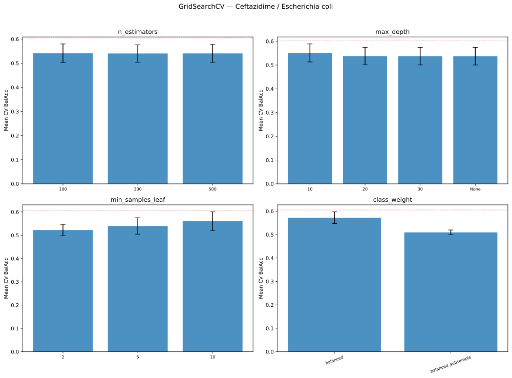
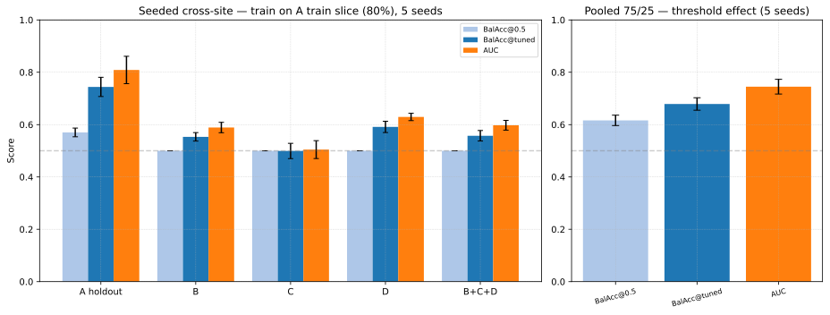
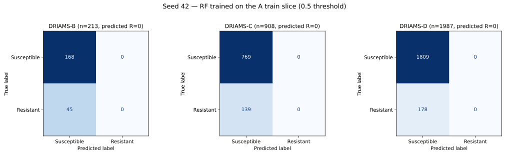
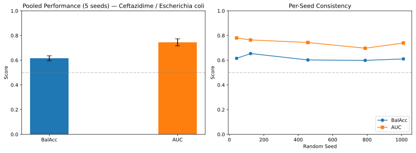
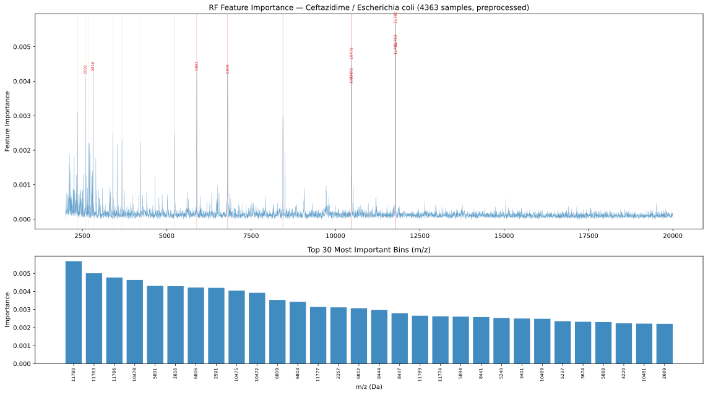

05 — Random Forest: Ceftazidime Resistance in E. coli
Species-specific, drug-specific Random Forest classifier on the Ceftazidime × Escherichia coli slice of DRIAMS. Introduces the third model family and the Feature importance machinery reused in 07 and 08.
Note
All numbers on this page come from local October 2026 runs of the notebook
and its seeded cross-site extension (see Provenance); the June 2026
exports are archived in results_rf_2026-06-13/.
Objective
Compare a tree ensemble against the linear (01) and MLP (02) families on a single well-populated drug–pathogen combination, and test whether Cross-site evaluation behaves as in 03.
Data
Pooled A+B+C+D, filtered to E. coli, 6000 bins at 3 Da resolution:
Site |
Samples |
Resistant |
Susceptible |
%R |
|---|---|---|---|---|
DRIAMS-A |
1255 |
120 |
1135 |
9.6% |
DRIAMS-B |
213 |
45 |
168 |
21.1% |
DRIAMS-C |
908 |
139 |
769 |
15.3% |
DRIAMS-D |
1987 |
178 |
1809 |
9.0% |
Total |
4363 |
482 |
3881 |
11.0% |
Method
Preprocessing — log1p transform + Standardize to zero mean (MaldiDeepKit), fitted on the training split only for every evaluation: the tuning train, Site A, or each seed’s training split. No information from the evaluation splits enters the transform.
Hyperparameter tuning — GridSearchCV over 72 combinations with 3-fold cross-validation, scored by Balanced Accuracy on a single pooled stratified 75/25 split (seed 42; 3,272 train / 1,091 holdout, 361 / 121 resistant):
n_estimators: [100, 300, 500]
max_depth: [10, 20, 30, None]
min_samples_leaf: [2, 5, 10]
Class weight: [‘balanced’, ‘balanced_subsample’]
The winning configuration is 500 trees, max_depth 10, min_samples_leaf 10, class_weight ‘balanced’ with cross-validated Balanced Accuracy 0.6049. The 25% holdout was then scored once: BalAcc 0.6152 / AUC 0.7805 (OOB error 0.0987).
No training loss. The Random Forest has no differentiable loss: the training objective is the Gini impurity, model selection uses cross-validated Balanced Accuracy, there is no epoch-wise loss curve or early stopping, and the OOB error (0.0987) is the only loss-like diagnostic reported.
Cross-site evaluation — the main notebook fits on all of Site A (1,255 spectra, 120 resistant) with the tuned configuration, preprocessing fitted on A, and scores B/C/D separately at the default threshold of 0.5. Its “A (train)” row is an in-sample reference and is labelled as such. The seeded extension 05-01-CrossSite-Seeded.ipynb splits A 80/20 into train/holdout per seed, fits on the A-train slice only, and additionally tunes the threshold by 3-fold cross-validated predictions inside that slice (Threshold Tuning), frozen for every target.
Pooled multi-seed evaluation — five independent label-stratified 75/25 splits of the pooled data (seeds 42, 123, 456, 789, 1011); the transform and the model are refit per split, again at the 0.5 threshold.
Feature importance — a final RF is trained on all pooled data (interpretation only, no held-out evaluation) and per-bin impurity importance is mapped onto the m/z axis.
Key Findings
Grid search. All four hyperparameters are nearly flat: mean CV Balanced
Accuracy stays in a ~0.51–0.60 band across every parameter level, with 500
trees and class_weight='balanced' at the top.


Mean 3-fold CV Balanced Accuracy (± SD across combinations) for each parameter level; the dashed line is the best score (0.6049).
Cross-site evaluation (seeded, held-out A). The main notebook also prints an “A (train)” row (BalAcc 0.999); that is training-set memorisation and is explicitly labelled as such. The clean protocol — implemented in 05-01-CrossSite-Seeded.ipynb — splits A 80/20 into a train slice and a held-out A test slice for five seeds, fits the tuned RF on the A-train slice only, and scores the A holdout plus B/C/D. Two thresholds are reported: the default 0.5 and a threshold tuned by cross-validated predictions inside A-train (frozen for every target).


Left: seeded cross-site evaluation (train on an 80% slice of A, mean ± SD over five seeds) for the A holdout, B, C, D and their union. Right: the pooled 75/25 runs at the default and tuned thresholds.


Seed-42 model at the 0.5 threshold: zero resistant predictions on B/C/D.
Target |
n per seed |
BalAcc @0.5 |
BalAcc @tuned |
AUC |
|---|---|---|---|---|
A holdout |
251 |
0.570 ± 0.017 |
0.744 ± 0.037 |
0.809 ± 0.052 |
DRIAMS-B |
213 |
0.500 ± 0.000 |
0.553 ± 0.016 |
0.589 ± 0.020 |
DRIAMS-C |
908 |
0.500 ± 0.000 |
0.499 ± 0.029 |
0.505 ± 0.034 |
DRIAMS-D |
1987 |
0.500 ± 0.000 |
0.591 ± 0.022 |
0.629 ± 0.014 |
B+C+D |
3108 |
0.500 ± 0.000 |
0.557 ± 0.020 |
0.597 ± 0.019 |
On held-out A spectra the tuned model reaches Balanced Accuracy 0.744 and AUC 0.809 — genuine within-site generalisation, and proof that the 0.999 “train” row is memorisation. On B/C/D the same model stays far behind: threshold tuning removes the all-susceptible collapse (0.500 → 0.55–0.59), but the underlying ranking barely transfers (AUC 0.505–0.629; C is at chance). The cross-site failure is therefore a genuine Domain shift effect, not an artifact of in-sample scoring or of the 0.5 threshold. The threshold tuned on A (0.29–0.35) does not transfer uniformly either: on C it ends slightly below chance (0.499).
Pooled multi-seed: the 0.5 threshold, not weak ranking. On pooled splits the RF reaches BalAcc 0.6162 ± 0.0198 at the default 0.5 threshold and AUC 0.7449 ± 0.0281 across five seeds. Re-scoring the same five splits with thresholds tuned by cross-validated predictions (mean threshold ≈ 0.35) raises Balanced Accuracy to 0.6788 ± 0.0238. The 0.5 rule suppresses resistant calls (seed 42: 65 predicted vs 121 true resistant); the pooled 0.62 is a decision-threshold artifact, not evidence of weak learning.


Left: mean ± SD over five pooled 75/25 splits. Right: per-seed consistency.
Seed |
BalAcc @0.5 |
BalAcc @tuned |
AUC |
OOB error |
|---|---|---|---|---|
42 (tuning holdout) |
0.615 |
0.700 |
0.781 |
0.099 |
123 |
0.654 |
0.688 |
0.764 |
0.104 |
456 |
0.602 |
0.702 |
0.743 |
0.107 |
789 |
0.599 |
0.639 |
0.697 |
0.105 |
1011 |
0.611 |
0.665 |
0.739 |
0.103 |
Mean ± SD |
0.616 ± 0.020 |
0.679 ± 0.024 |
0.745 ± 0.028 |
— |
Seed 42 is also the 25% tuning holdout of the grid search (same split, preprocessing and model seed, by construction). Tuned-threshold values come from 05-01-CrossSite-Seeded.ipynb; the @0.5 and AUC columns reproduce the main notebook’s report exactly.
Feature importance. The final RF put most impurity importance on a few narrow regions of the spectrum: ~11.78 kDa, ~10.47 kDa, ~6.81 kDa, ~5.89 kDa, ~2.82 kDa and ~2.59 kDa, each represented by 2–4 adjacent bins.


Top: per-bin impurity importance along the m/z axis, with the top-30 bins marked. Bottom: the top-30 bins as a bar chart.
Rank |
Bin |
m/z (Da) |
Importance |
|---|---|---|---|
1 |
|
11780 |
0.005672 |
2 |
|
11783 |
0.005004 |
3 |
|
11786 |
0.004769 |
4 |
|
10478 |
0.004632 |
5 |
|
5891 |
0.004305 |
6 |
|
2816 |
0.004289 |
7 |
|
6806 |
0.004213 |
8 |
|
2591 |
0.004197 |
9 |
|
10475 |
0.004044 |
10 |
|
10472 |
0.003923 |
Interpretation
Third model family. The RF pipeline (tuning, cross-site, multi-seed, importance) works and is reused for the per-drug models of 07 and the federated RF of 08.
Within-site skill is real; cross-site transfer is not. With a held-out slice of A, the tuned RF reaches 0.744 Balanced Accuracy / 0.809 AUC on unseen A spectra, but only 0.50–0.63 AUC on B/C/D even after threshold tuning. The domain shift documented in 03/04 is therefore genuine, not an artifact of in-sample scoring or of the 0.5 threshold.
The pooled 0.62 is a threshold artifact. The same five pooled splits reach 0.679 Balanced Accuracy once thresholds are tuned by cross-validated predictions, on top of AUC 0.745. For comparison, the per-drug RF of 07 (all species, tuned thresholds) reaches 0.686 / 0.759 on Ceftazidime — a different scope, but nearly identical performance.
The remaining ceiling is the task, not the tuning. Only 482 resistant spectra exist (24 in a typical A holdout, 121 in a pooled test split), clinical S/R labels carry noise, and resistance is an indirect spectral phenotype. The hyperparameter surface is flat (all CV means within ~0.51–0.60), so no grid search converts the data into a stronger signal: ~0.68 Balanced Accuracy / 0.75 AUC is what this model family extracts.
Spectral regions. The importance peaks are narrow and clustered (adjacent bins), consistent with a few informative peaks rather than a distributed signature.
Caveats
Threshold conventions differ by experiment. The main notebook reports the default 0.5 threshold; the seeded notebook adds cross-validated thresholds. A threshold tuned on A does not transfer uniformly to B/C/D (C ends at 0.499).
The A holdout is small — 251 spectra with 24 resistant per seed — so seed-to-seed variation on A is wide (AUC 0.75–0.88); read the five-seed aggregate, not individual seeds.
Hyperparameters were selected on pooled A+B+C+D, i.e. on data that include the cross-site test sites. The model fits themselves are clean (A-train or pooled-train only), but model selection saw B/C/D, so cross-site numbers carry selection optimism. The grid is near-flat, which limits the practical effect.
Splits are label-stratified, not site-stratified (single species, so species stratification is moot). Site B contributes only 213 spectra, and site composition varies across the splits.
Single drug–pathogen pair with 482 resistant spectra overall; B/C/D resistant counts are 45 / 139 / 178, so per-site metrics are noisy.
The main notebook’s “A (train)” row (0.999 / 1.000) is in-sample and explicitly labelled as such; it is not generalisation evidence.
Feature importance is impurity-based, computed by a model trained on all pooled data, and correlated bins share/steal importance; treat the m/z regions as hypotheses, not mechanisms.
Environment: results come from a single library stack (scikit-learn 1.9.0, seed 42 family). The June exports differed materially (see Provenance), so version sensitivity is real.
Provenance
The June 2026 exports in results_rf_2026-06-13/ were produced by an
earlier notebook state (100 trees, no preprocessing) and cannot be reproduced
from the committed pipeline: the grid search selected those parameters at the
time, while the current notebook adds log1p+standardize (commit ec38c13)
and, on a local re-run, selects 500 trees. The earlier multi-seed metrics
(BalAcc 0.543 ± 0.008) matched neither the committed code nor its stated
parameters, so they were not used here. All numbers on this page come from
clean local runs on 2026-10-09 (main notebook) and 2026-10-10 (seeded
cross-site extension); the notebook’s feature-importance layout bug (shared
x-axis squashing the top-30 panel) was fixed during this pass.
Notebooks and Files
05-RandomForest-Ceftazidime-Ecoli.ipynb — main analysis
05-01-CrossSite-Seeded.ipynb — seeded cross-site evaluation with a held-out A slice and cross-validated thresholds
recover_multi_seed_metrics.py — pooled multi-seed reproduction and June-vs-current discrepancy check
results_rf/— current outputs (report.md,cross_site_seeded_metrics.csv,pooled_threshold_metrics.csvand six figures)results_rf_2026-06-13/— archived June exports
References Back
01 — LogisticRegression baseline
03 — Cross-site evaluation protocol